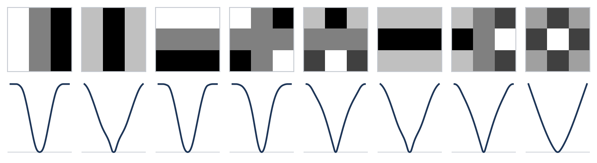

Explicit Priors¶
Explicit Priors fits fields-of-experts image priors in closed form: one linear solve, no training loop.


Method¶
A fields of experts [6] scores an image \(\bbx\) through the responses of filters \(\bbf_{k}\),
where the potentials \(\phi_{k}\) are expanded on a fixed basis \(b_{a}\). The gradient \(\nabla \Phi(\bbx) = \bbG(\bbx) \, \bbc\) is linear in the coefficients, so fitting \(\Phi\) to images is a least-squares problem in \(\bbc\), solved by its normal equations
The points at which \(\bbG\) is evaluated and the target \(\mathbf{t}\) set the objective, with noisy images \(\bby = \bbx + \sigma \mathbf{n}\):
one-step denoiser \(\bby - \sigma^{2} \nabla \Phi(\bby)\) with the lowest error: points \(\bby\), target \((\bby - \bbx) / \sigma^{2}\) (denoising score matching [7]);
MAP denoiser \(\argmin_{\bbx} \tfrac12 \norm{\bbx - \bby}^{2} + \sigma^{2} \Phi(\bbx)\) that returns the MMSE estimate \(\bbm\) [4]: points \(\bbm\), target \((\bby - \bbm) / \sigma^{2}\). Gauss-Newton steps then fit the MAP output itself;
prior of clean images, by score matching [5].
The filters can be analytic, computed from patches in closed form, or learned with the potentials by variable projection [3]: the potentials are re-solved at every step of the filter descent.
Usage¶
import explicit_priors as ep
prior = ep.pretrained("map_0.1") # or fit your own:
prior = ep.fit(ep.filters.dct(7), images, sigma=0.1, objective="map")
x = ep.denoise(prior, y)
Setup¶
# user install
pip install explicit_priors@git+https://github.com/HaouchatY/explicit-priors.git
# developer install
git clone https://github.com/HaouchatY/explicit-priors.git
cd explicit-priors/
pip install -e ".[dev,examples]"
pre-commit install
# run test suite
pytest src/explicit_priors_tests